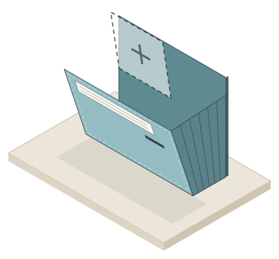

Your links, filed.
Loading your library…

No links yet
Paste any web address and SaveMyLinks files it in under a second, then adds the page's own title, picture and summary so you can recognise it later.
Save your first linkLoading your library…

Paste any web address and SaveMyLinks files it in under a second, then adds the page's own title, picture and summary so you can recognise it later.
Save your first link